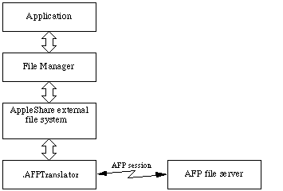
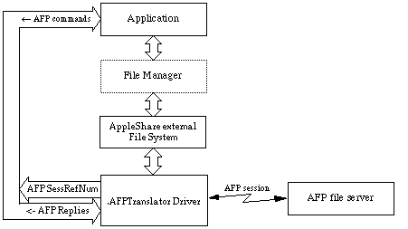

|
|
This Technote shows how to borrow the session
reference number of an AFP volume mounted by the Macintosh File System.
It also shows how to retrieve other information from the file system for a mounted
AFP volume. This revision of the Borrowed AFP Sessions Technote applies to systems that
are using AppleShare Client 3.7 and later. Previous versions of the
AppleShare client should use the information contained in
Technote NW 16.
* The updated information is in bold and italic.
Updated: [Feb 09 1998]
|
Introduction
The AppleShare Chooser extension allows Macintosh applications to
perform almost all volume and file access operations on an AppleTalk
Filing Protocol (AFP) file server by translating File Manager
commands to their AFP equivalent commands. To access a file server,
an application normally calls the File Manager. The File Manager
calls the AppleShare external file system (part of the AppleShare
Chooser extension) which translates the File Manager command into an
AFP call. The AppleShare external file system then calls the
.AFPTranslator driver. The .AFPTranslator driver
delivers the AFP call to the server and returns the reply to the
AppleShare external file system. The connection to the server can
be either over AppleTalk or TCP/IP depending on the connection
transport type. The AppleShare external file system translates
the reply data (if any) and returns it to the File Manager which
returns it to the application. Figure 1 shows the normal flow of
commands between a Macintosh application and an AFP file server.

Figure 1. Application Using the File Server Through the File Manager
However, there are a few instances for which no equivalent File
Manager commands exist to perform operations supported by AFP. In
those instances, an application must use the .AFPTranslator
driver to access the file server with AFP commands.
Applications accessing a file server with AFP commands need to
have an open AFP session with the file server. When no session
exists, the application must use the .AFPTranslator driver to
open an AFP session with the afpLogin (and possibly
afpLoginCont) command. However, when an AFP volume on the
file server is already mounted by the Macintosh File System, a
session is already open with the file server. If the session
reference number is retrieved from the .AFPTranslator driver (another
part of the AppleShare Chooser extension), that session can be used,
with restrictions, to access the file server with AFP
commands. Figure 2 shows the flow of commands when a Macintosh
application accesses an AFP file server directly through the
.AFPTranslator driver using the session reference number
borrowed from the .AFPTranslator driver.

Figure 2. Application Using File Server Through the
.AFPTranslator Driver
with Borrowed Session Reference Number
The next section of this Technote tells how to get the AFP
session reference number for a mounted AFP volume from the
.AFPTranslator driver. It also lists the restrictions you must
observe when using the borrowed AFP session.
Back to top
The Server Volume Information Status Call
The AppleShare external file system performs the translation of
File Manager commands to AFP commands and maintains sessions with AFP
file servers. The server volume information (AFPSVolInfo)
status call to the .AFPTranslator driver can be used to retrieve
several important pieces of information stored by the driver. The
information returned by the AFPSVolInfo status call is:
- the AFP version used to open the session with the server. This
lets you know what possible AFP calls can be made with this session.
- the AFP session reference number. The session reference
number is passed to the .AFPTranslator driver whenever you
make an AFP call.
- the AFP volume ID number. This is the number you pass to AFP
calls that require the volume ID number.
- the file server's internet socket address. This is the same
internet socket address returned by the File Manager
PBHGetVolParms function in the vMServerAdr field of
the GetVolParmsInfoBuffer record. It is a pointer to an
OTAddress structure.
- the user authentication method (UAM) used to establish the
session. This is the same word value returned by the File Manager
PBHGetLogInInfo function in ioObjType and by the
File Manager PBGetVolMountInfo function in the
uamType field of the AFPVolMountInfo record.
- the user name used to establish the session. This is the same
string returned by the File Manager
PBHGetLogInInfo function
in the string pointed to by ioObjNamePtr and by the File
Manager PBGetVolMountInfo function as part of the
AFPData field in the AFPVolMountInfo record (the
exact location of the user name in the AFPData field in the
AFPVolMountInfo record is determined by the
userNameOffset field).
- the server's volume icon and mask. This is the same 256-byte
icon and mask returned by a control call to the disk driver with
csCode = 21.
- the string displayed by the Finder's Get Info dialog (after the
word "Where:"). This is the same string returned by a control call to
the disk driver with
csCode = 21.
The information list above is returned in a
GetVolSessInfoRec record. The GetVolSessInfoRec
record is defined as follows:
GetVolSessInfoRec = RECORD
sessAFPVersion: Integer; {AFP version number: }
{ 1 = version 1.1 }
{ 2 = version 2.0 }
{ 3 = version 2.1 }
{ 4 = version 2.2 }
sessReferenceNumber: Integer; {AFP session reference number}
sessAFPVolID: Integer; {AFP volume identifier}
sessServerAddress: OTAddressPtr; {server internet address}
sessUAMType: Integer; {user authentication method: }
{ 1 = 'No User Authent' }
{ 2 = 'Cleartxt Passwrd' }
{ 3 = 'Randnum Exchange' }
{ 6 = '2-Way Randnum exchange' }
sessUserNamePtr: StringPtr; {ptr to user name string}
sessVolIconPtr: Ptr; {ptr to server volume icon/mask}
sessWhereStringPtr: StringPtr; {ptr to "where" information string}
END;
|
|
WARNING:
sessUserNamePtr, sessVolIconPtr,
sessServerAddress , and sessWhereStringPtr
point to data owned by the .AFPTranslator driver. You must copy that
data into your program variables before using it.
|
The fields in the ParamBlockRec record used for the
AFPSVolInfo status call to the .AFPTranslator driver are
defined as follows:
-> 12 ioCompletion long pointer to completion routine
<- 16 ioResult word result code
-> 24 ioRefNum word .AFPTranslator reference number
-> 26 csCode word always AFPSVolInfo
-> 28 ioMisc long pointer to volume's VCB
-> 32 ioBuffer long pointer to
GetVolSessInfoRec
-> 36 ioReqCount long size of data requested
<- 40 ioActCount long size of data returned
Here are the detailed descriptions of the parameter block fields:
ioCompletion Longword input pointer: If the
AFPSVolInfo status cell is called asynchronously, this must
be a pointer to the completion routine or NIL.
ioResult Word result value: The result code from the
function.
ioRefNum Word input value: The driver reference number of
the .AFPTranslator driver.
csCode Word input value: Always AFPSVolInfo
(124).
ioMisc Longword input pointer: A pointer to the volume's
volume control block (VCB).
ioBuffer Longword input pointer: A pointer to the
GetVolSessInfoRec where the server volume information is
returned.
ioReqCount Longword input value: The size of the
GetVolSessInfoRec pointed to by ioBuffer.
ioActCount Longword result value: The size of the data
returned in the GetVolSessInfoRec pointed to by
ioBuffer.
The following result codes can be returned by the
AFPSVolInfo status call:
noErr 0 No error.
badUnitErr -21 The driver reference number is bad.
unitEmptyErr -22 The driver reference number is bad.
notOpenErr -28 The driver isn't open.
statusErr -18 The driver can't respond to this status
call.
paramErr -50 Either ioReqCount indicates the
GetVolSessInfoRec record is too small, or the volume
specified by ioMisc is not owned by the .AFPTranslator
driver.
The following code shows how to use the AFPSVolInfo
status call to get the server volume information for the volume
specified by its volume reference number.
USES
AppleTalk, Files;
CONST
{ AFP version numbers }
AFPVer1_1 = 1; { AFP version 1.1 }
AFPVer2_0 = 2; { AFP version 2.0 }
AFPVer2_1 = 3; { AFP version 2.1 }
AFPVer2_2 = 4; { AFP version 2.2 }
AFPSVolInfo = 124; { server volume information call }
TYPE
GetVolSessInfoRec = RECORD
sessAFPVersion: Integer; {AFP version number}
sessReferenceNumber: Integer; {AFP session reference number}
sessAFPVolID: Integer; {AFP volume identifier}
sessServerAddress: OTAddressPtr; {server internet address}
sessUAMType: Integer; {user authentication method}
sessUserNamePtr: StringPtr; {ptr to user name string}
sessVolIconPtr: Ptr; {ptr to server volume icon/mask}
sessWhereStringPtr: StringPtr; {ptr to "where" information string}
END;
FUNCTION GetVolSessionInfo (theVRefNum: Integer;
VAR theVolSessInfoRec: GetVolSessInfoRec): OSErr;
CONST
TSigWord = $4244; { HFS volume signature }
VAR
pb: ParamBlockRec;
vcbPtr: QElemPtr;
afpTranslatorRefNum: Integer;
err: OSErr;
BEGIN
{ get the .AFPTranslator driver refNum }
err := OpenDriver('.AFPTranslator', afpTranslatorRefNum);
IF err <> noErr THEN
BEGIN { couldn't open the driver }
GetVolSessionInfo := err;
Exit(GetVolSessionInfo);
END;
{ find the VCB with the volume reference number }
QHdrPtr(vcbPtr) := GetVCBQHdr; { pointer to VCB queue header }
vcbPtr := QHdrPtr(vcbPtr)^.qHead; { pointer to first VCB }
WHILE (vcbPtr <> NIL) DO
BEGIN
IF VCB(vcbPtr^).vcbSigWord = TSigWord THEN { must be HFS volume }
IF VCB(vcbPtr^).vcbVRefNum = theVRefNum THEN
Leave; { we found the VCB }
vcbPtr := vcbPtr^.vcbQElem.qLink; { next VCB }
END;
IF (vcbPtr = NIL) THEN
BEGIN { couldn't find the volume }
GetVolSessionInfo := nsvErr;
Exit(GetVolSessionInfo);
END;
{ make the status call to get the volume session info }
WITH pb DO
BEGIN
ioRefNum := afpTranslatorRefNum;
csCode := AFPSVolInfo;
ioMisc := Ptr(vcbPtr);
ioBuffer := @theVolSessInfoRec;
ioReqCount := LongInt(sizeof(GetVolSessInfoRec));
END;
GetVolSessionInfo := PBStatus(@pb, FALSE);
END;
FUNCTION DoGetVolSessionInfo (vRefNum: Integer): OSErr;
VAR
err: OSErr;
myVolSessInfoRec: GetVolSessInfoRec;
myIconHandle: Handle;
myUserName: Str31;
myWhereString: Str255;
BEGIN
err := GetVolSessionInfo(vRefNum, myVolSessInfoRec);
IF err = noErr THEN
BEGIN
WITH myVolSessInfoRec DO
BEGIN
{ copy user name into a string variable }
myUserName := sessUserNamePtr^;
{ allocate a handle and move the icon into it }
myIconHandle := NewHandle(kLargeIconSize);
IF myIconHandle = NIL THEN
BEGIN
DoGetVolSessionInfo := MemError;
Exit(DoGetVolSessionInfo);
END;
BlockMove(sessVolIconPtr, myIconHandle^, kLargeIconSize);
{ copy where information string into a string variable }
myWhereString := sessWhereStringPtr^;
{ at this point, you can use all of the information just copied }
{ from myGetVolSessInfoRec or still in myGetVolSessInfoRec }
DisposHandle(myIconHandle);
END;
END;
DoGetVolSessionInfo := err;
END;
|
Session Borrowing Rules and Restrictions Warning:
The restrictions listed in this Note must be observed when your
program borrows an AFP session owned by the Macintosh File System.
There is a good reason why Apple has not documented the
AFPSVolInfo status call in the past. AFP file servers
differentiate users by their sessions and the AppleShare external
file system makes certain assumptions about AFP volumes (and their
contents) that it has open. If the session owned by the Macintosh
File System is used improperly, you can confuse the AppleShare
external file system or the file server. The basic rule you should
use when borrowing an AFP session owned by the file system is
If it can be done with File Manager functions, use the File
Manager functions--don't use AFP calls.
That means you shouldn't open or close volumes, directories,
files, or a volume's desktop database, you shouldn't use calls that
require a file or desktop database to be open, and you definitely
should not close the AFP session. If you need to do any of those AFP
operations, you should use the .AFPTranslator driver to open
your own AFP session with the file server.
The following is a list of AFP calls that are safe to use with a
session borrowed from the file system. For each AFP call, there's an
description of what you can do with the call that you cannot do with
the File Manager functions.
afpGetSParms This call can be used to retrieve the server
time and the list of server volumes. For each volume, you also can
determine if the volume is password-protected and if the volume
contains Apple II configuration information.
afpSetVolParms This call can be used to set the backup
date of a volume.
afpChangePassword This call can be used to change the
user's password.
afpGetUserInfo This call can be used to retrieve the
specified user's user ID or primary group ID.
afpGetSrvrMsg This call can be used to retrieve the
current greeting message or server message. This call is only
supported by AFP 2.1 servers. Note: the server message may not be
applicable to the user.
afpMiscUserCommand reserved for developer use. See
Technote #323, "Arbitrating Use of afpMiscUserCommand and
afpMiscUserWrite."
afpMiscUserWrite reserved for developer use. See
Technote #323, "Arbitrating Use of afpMiscUserCommand and
afpMiscUserWrite."
The list continues. However, these calls should be used only when
you need to retrieve or set information (such as ProDOS information)
that is inaccessible through File Manager functions.
afpEnumerate This call can be used to list the contents
of a directory when either ProDOS information or specific file or
directory attribute information is needed. For all other purposes,
the File Manager's PBGetCatInfo function should be used.
afpGetVolParms This call can be used to retrieve the
parameters for a particular server volume. For most purposes, the
File Manager's PBHGetVInfo function should be used instead.
afpSetDirParms This call can be used to set parameters
for a specified directory when either ProDOS information or specific
directory attribute information must be set. For all other purposes,
the File Manager's PBSetCatInfo function should be used.
afpSetFileParms This call can be used to set parameters
for a specified file when either ProDOS information or specific file
attribute information must be set. For all other purposes, the File
Manager's PBSetCatInfo function should be used.
afpGetFlDrParms This call can be used to retrieve the
parameters for a specified file or directory when either ProDOS
information or specific file or directory attribute information is
needed. For all other purposes, the File Manager's
PBGetCatInfo function should be used.
afpSetFlDrParms This call can be used to set parameters
for a specified file or directory when either ProDOS information or
specific file or directory attribute information must be set. For all
other purposes, the File Manager's PBSetCatInfo function
should be used.
If the AppleShare 3.0 (or later) Chooser extension is used with
System 6, you can make the following AFP 2.1 calls to an AFP 2.1 file
server. These calls are not supported by the System 6 File Manager.
afpGetSrvrMsg See description in list above.
afpCreateID This call can be used to create a unique file
ID for a specified file.
afpDeleteID This call can be used to invalidate all
instances of the specified file ID.
afpResolveID This call can be used to return information
(including the file location) of the specified file ID.
afpExchangeFiles This call can be used to exchange the
contents of two files on a server volume.
afpCatSearch This call can be used to search a volume for
files or folders that match specified criteria.
Back to top
Conclusion
The AFPSVolInfo status call to the .AFPTranslator driver
returns useful information for developers who need to access an AFP
file server in ways not supported by the Macintosh File System.
However, the restrictions lists in this note must be observed to
prevent problems on the client Macintosh or the AFP file server.
Back to top
References
Inside Macintosh, Volume V, The AppleTalk Manager
M.NW.afpMiscUserCommand
Inside AppleTalk, Second Edition, AppleTalk Filing Protocol
AppleShare 3.0 Developer's Kit, AppleTalk Filing Protocol
Version 2.1
Back to top
Downloadables
|

|
Acrobat version of this Note (164K).
|
Download
|
Back to top
|